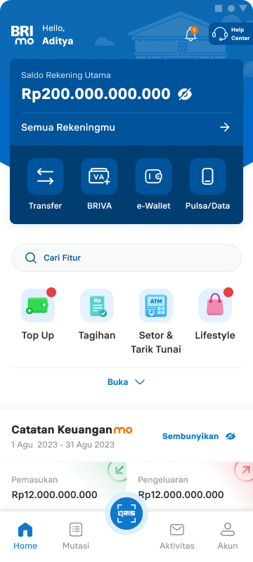

From UI inconsistency to an organizational problem
The evidence that changed BRIdex from a library-cleanup project into a governance initiative.
01. The organizational problem behind the UI inconsistency
BRI's formal design organization ran a centralized model across five main squads based on its hero products. But that was only the visible center. BRI also operated many other products and ad-hoc dashboard projects, while vendor and other design contributors worked outside the department's direct structure.
For almost four years, this extended model produced fragmentation instead of the consistency centralization was meant to guarantee.

Typography and color
Inter supports a compact, functional hierarchy; institutional blues reinforce a trusted banking character.
Manrope creates a friendlier, more expressive hierarchy; purple–cyan gradients signal a lifestyle-oriented credit product.
Design language
Institutional blue, utility-led, and information-dense.
Purple–cyan, lifestyle-led, and visually playful.
If two hero products can differ this much, imagine the fragmentation across BRI's wider ecosystem: five hero-product squads, many internal dashboards and applications, plus products built by vendors and teams outside our department.
Five patterns defined the fragmentation
Component sprawl.
Buttons, inputs, cards, and other common patterns existed in multiple unreconciled variants. There was no canonical version teams could confidently use.
Untrusted components.
Existing components were not documented clearly enough to reuse safely, so designers often rebuilt them.
Broken handoffs.
Designers inherited incomplete component sets and had to reconstruct the foundation before starting higher-value product work.
A rebuild tax.
BRImo and Ceria built separate design languages at the same time—two teams solving the same underlying problem with different answers.
Sibling products drifted.
Products carrying the same BRI identity moved into different visual and interaction languages.
The initial temptation was to treat this as a library-cleanup exercise. But a cleaner Figma file would not stop the next team from rebuilding again. The recurring failure was structural: the system had no durable ownership, contribution model, or accountability when product priorities competed for attention.
The workshop exposed the system behind the symptoms
I ran a bank-wide workshop with product designers across streams and products to understand why the existing system was not being maintained or adopted.
Five connected observations
- Workload and ownershipDesigners created local components for immediate product needs but lacked time to maintain them. System work competed with delivery inside the same role.
- Design–development mismatchSome implemented interfaces did not match Figma, exposing a gap between the design foundation and production.
- Component inconsistencyWithout a trusted canonical source or reliable documentation, teams continued rebuilding components.
- Missing illustration and icon standardsIllustrations and icons lacked shared guidelines, leaving another layer of the product identity fragmented.
- Knowledge and prioritization ambiguityDesigners were unsure when to improve the system, create a component, or prioritize product delivery.
Governance board synthesis
Lack of contribution
Designers were busy with product schedules, the communication channel was unclear, and teams did not know how—or when—to involve the design-system team.
Lack of adoption
Teams lacked onboarding, questioned whether the system suited their product, and could not tell whether its documentation or components were current.
Teams were not simply refusing to use a shared system. They lacked capacity, clear prioritization, contribution rules, onboarding, design–code alignment, and confidence in the source of truth.
How might we create a shared product foundation that teams could trust, adopt, and maintain without depending on volunteer effort from a small central design group?
I thought I was building a library
I entered BRIdex with a contained assumption: BRI needed a more robust design library. Components were inconsistent, documentation was incomplete, and teams kept rebuilding the same foundations. If we consolidated the components and documented them properly, perhaps teams would finally have a source of truth they could trust.
The bank-wide workshop made that assumption uncomfortable. Designers were balancing system maintenance against product deadlines. They did not know when contribution was expected, who should own it, or whether the latest documentation could be trusted. Engineers were implementing components differently from Figma. At BRI's scale, even a well-crafted library could become another artifact that everyone depended on and nobody had enough time to maintain.
What if our design-system problem was not primarily the components—but the way the organization worked around them?
That question moved the problem through several layers. What began as a craft problem became a team capacity and ownership problem. Across products, it became a system problem: decision rights, contribution paths, local libraries, and engineering alignment. To compete with hero-product priorities such as BRImo, it also had to become a business problem that leadership could recognize and support.
This changed what I believed my role was. I stopped asking only what belonged in the library. I started asking who would keep it alive, when product teams should contribute, how local needs should shape the core, how engineers would participate, and why leadership should protect the work when delivery pressure increased.
A shared foundation only scales when the organization around it is designed too.